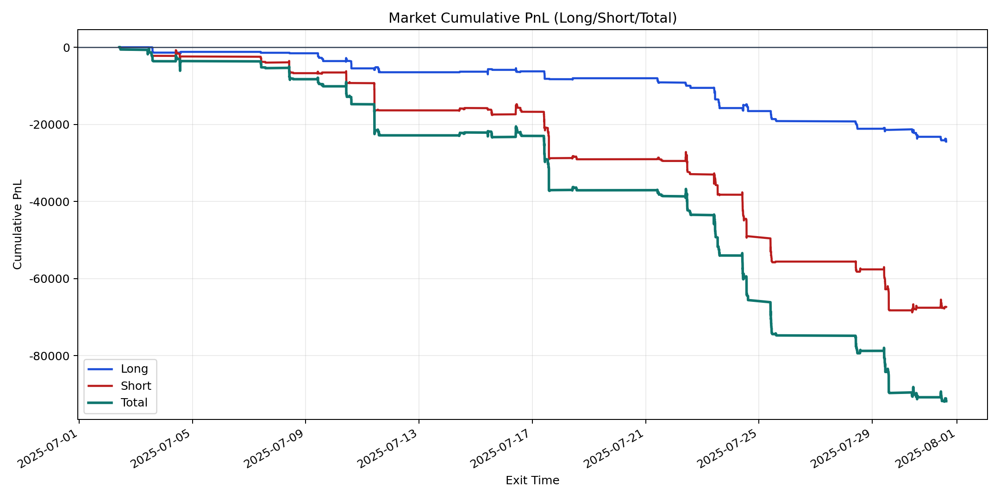
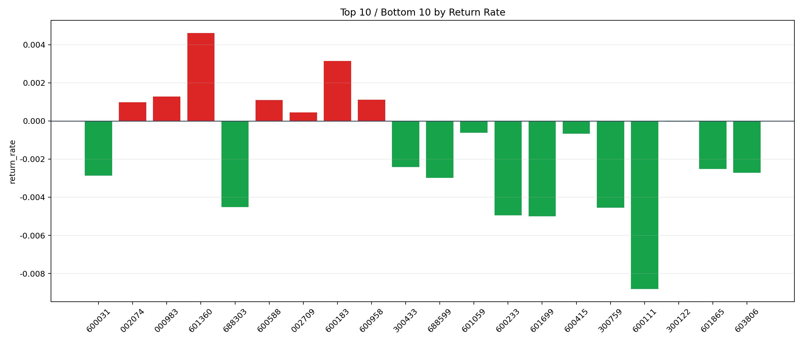

| repo_root | /home/haoranyou/data/output/dynamic_AUM_TAKER_index300 |
|---|---|
| period_months | 1 |
| period_label | 2025-07-02_to_2025-07-31 |
| start_time | 2025-07-02 09:58:47 |
| end_time | 2025-07-31 14:40:27 |
| n_trades | 3270 |
| n_symbols | 37 |
| total_pnl | -91787.35315000021 |
| long_total_pnl | -24454.065599999514 |
| short_total_pnl | -67333.28755000068 |
| total_entry_notional | 58639399.0 |
| long_entry_notional | 18235603.0 |
| short_entry_notional | 40403796.0 |
| total_return_rate | -0.001565284684278572 |
| long_return_rate | -0.0013410066889479615 |
| short_return_rate | -0.0016665089475751407 |
| top_symbols_by_return | ["601360", "600183", "000983", "600958", "600588", "002074", "002709", "300122", "601059", "600415"] |
| bottom_symbols_by_return | ["600111", "601699", "600233", "300759", "688303", "688599", "600031", "603806", "601865", "300433"] |

